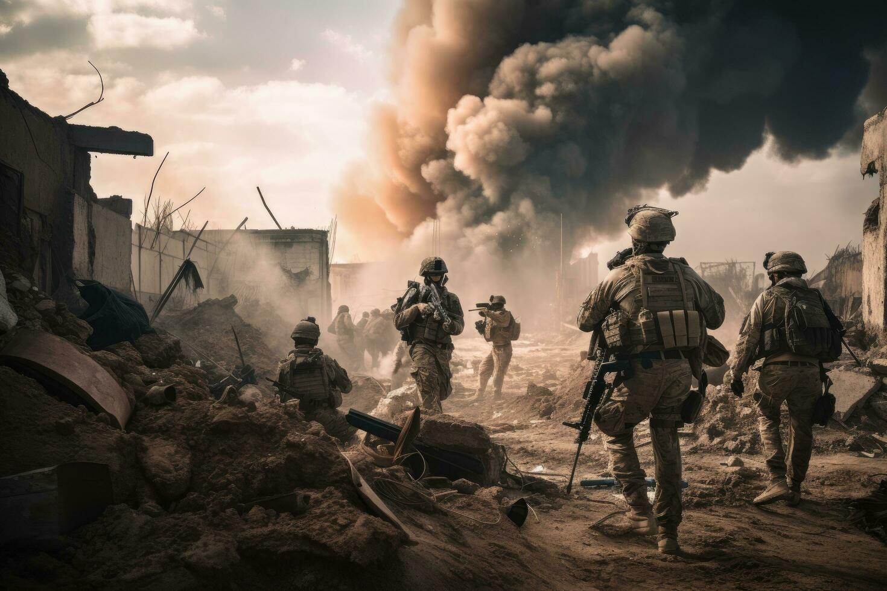
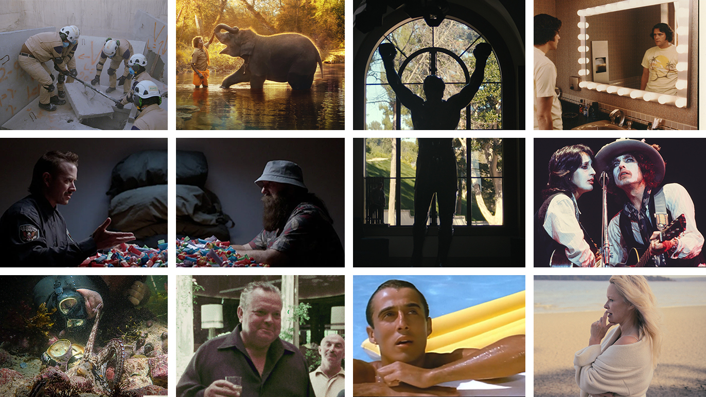

O passado que transformou o mundo.
Conheça conflitos, acontecimentos e histórias que marcaram a humanidade.
História das Guerras Documentários
Conheça os conflitos que marcaram a humanidade, suas causas e consequências ao longo do tempo.
Algumas guerras provocaram grandes mudanças nas fronteiras e na organização dos países.
Explorar história
Conheça produções audiovisuais que apresentam acontecimentos reais por meio de imagens, entrevistas e relatos.
Os documentários ajudam a compreender diferentes perspectivas sobre acontecimentos históricos.
Ver documentáriosEsta foi desenvolvido com o objetivo de apresentar acontecimentos históricos e documentários relacionados à história das guerras, permitindo conhecer melhor fatos que marcaram o mundo.